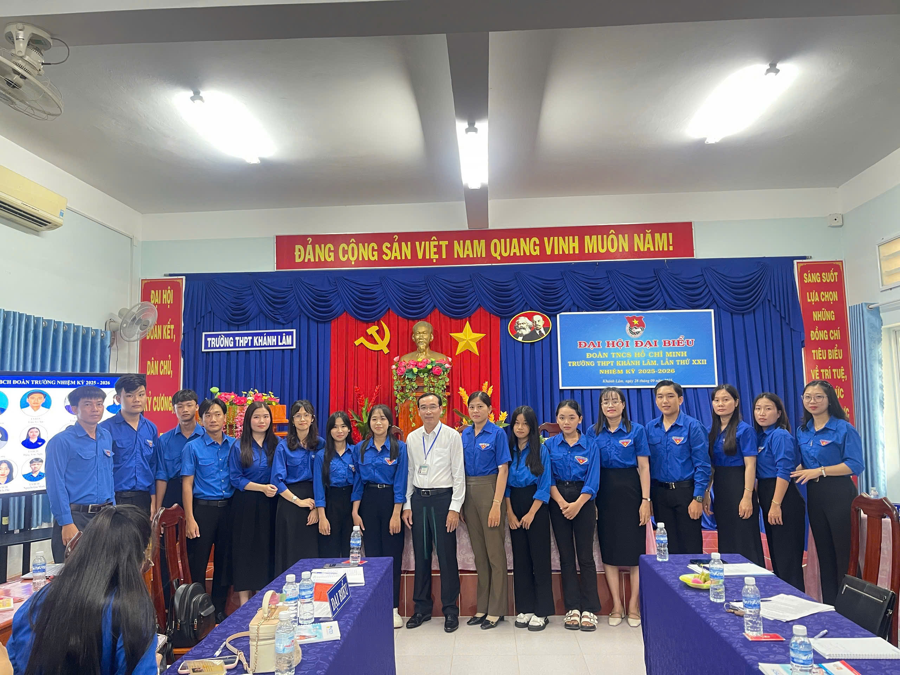

Đoàn Trường THPT Khánh Lâm
Đâu cần thanh niên có, việc gì khó có thanh niên!

️🎉 Đoàn thanh niên️🎉
Lễ kết nạp Đoàn viên mới - Những gương mặt ưu tú của trường THPT Khánh Lâm.
Hoạt động Đoàn tại trường THPT Khánh Lâm không chỉ là những buổi họp sinh hoạt lớp, mà là cả một hành trình rèn luyện kỹ năng và tinh thần trách nhiệm. Từ những buổi lao động tình nguyện dọn dẹp nghĩa trang liệt sĩ đến những chiến dịch Hoa Phượng Đỏ rực rỡ, mỗi Đoàn viên đều cháy hết mình với nhiệt huyết tuổi trẻ, đóng góp sức nhỏ cho quê hương U Minh thân yêu.

✊ Tình nguyện

💪 Rèn luyện kỹ năng
Màu áo xanh tình nguyện nhuộm thắm sân trường và các nẻo đường quê hương.
Không chỉ dừng lại ở hoạt động phong trào, Đoàn trường còn chú trọng bồi dưỡng lý luận chính trị và kỹ năng mềm cho học sinh thông qua các lớp cảm tình Đoàn, các buổi hội thảo khởi nghiệp sáng tạo. Những bài học về sự sẻ chia, lòng nhân ái và tinh thần kỷ luật chính là hành trang quý giá nhất mà mỗi học sinh có được sau những năm tháng gắn bó với công tác Đoàn dưới mái trường này.

Hoạt động đoàn
Sức mạnh tập thể - Động lực thúc đẩy sự phát triển của nhà trường.
Khép lại mỗi năm học, ngọn lửa của phong trào thanh niên vẫn luôn cháy sáng trong lòng mỗi học sinh Khánh Lâm. Chúng tôi tự hào là thế hệ trẻ kế thừa và phát huy những giá trị tốt đẹp, sẵn sàng vững bước trên con đường lập thân lập nghiệp, xứng danh thanh niên thế hệ Hồ Chí Minh.
⭐ ⭐ ⭐
-- Sống mãi tuổi trẻ Khánh Lâm --